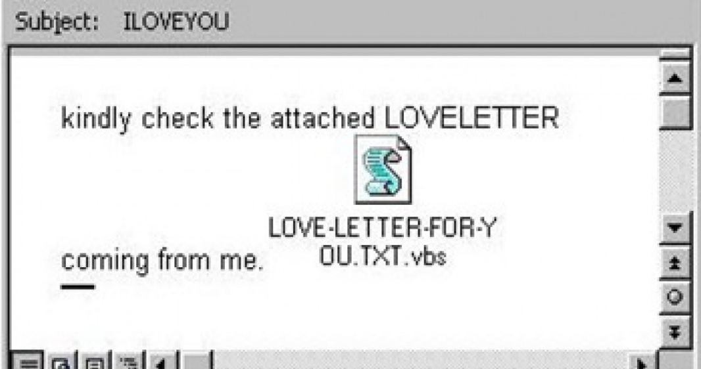
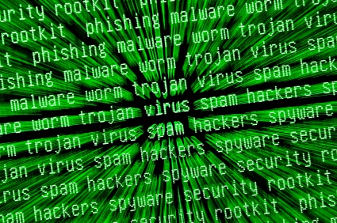

Los casos de virus más famosos y problemáticos de la historia han sido:
El virus se presentó en un principio en forma de mensaje de correo con el asunto "ILOVEYOU" y un archivo
adjunto con el nombre "LOVE-LETTER-FOR-YOU.TXT.vbs",
que al ser abierto, infectaba el ordenador y se autoenviaba a las direcciones de correo que el usuario tuviera en su agenda de direcciones.
Comenzó en Filipinas y le bastó un solo día para propagarse por todo el mundo, infectando en Hong Kong, Europa y luego en los Estados Unidos.
Cinco días más tarde, se reconocían 18 mutaciones del virus. Al multiplicarse explosivamente, este gusano condujo a Internet al colapso.
El día 8 de mayo, Reonel Ramones, un empleado bancario de 27 años, fue detenido en Manila por la Oficina Nacional de Investigaciones (NBI) de la policía de
Filipinas y acusado preliminarmente de vulnerar la Ley Normativa sobre Instrumentos de Acceso, cuyo principal objetivo es proteger las contraseñas para las
tarjetas de crédito.Sin embargo, fue liberado al día siguiente por orden de la justicia filipina, al carecer de pruebas suficientes para mantenerlo bajo custodia.
La acusación se había fundamentado en una queja de un proveedor de servicios de Internet de que el virus se había originado en el departamento en que Ramones vivía
con su compañera,
Irene de Guzmán, y el hermano de esta, Onel de Guzmán. Todos ellos habían estudiado en el Colegio de Computación AMA de Manila (AMACC).
Tres días más tarde, el 11 de mayo, el virus estaba muy expandido por todos los PC y la situación se estaba saliendo de control. Onel de Guzmán se presentó con
su abogado en conferencia de prensa para reconocer que pudo haber trasmitido el virus "accidentalmente".6 Tomando como base los programas encontrados en el
departamento de Guzmán y Ramones por la policía, se dijo en un primer momento que el virus había sido elaborado por un grupo de estudiantes del Colegio de Computación
AMA denominado "GRAMMERSoft", grupo al cual pertenecía Guzmán.7 Sin embargo, este luego confesaría que había creado el virus por sí solo, y que correspondía a la
aplicación de sus tesis: una guía sobre cómo robar códigos secretos a través de Internet o cómo introducirse en un ordenador ajeno y tomar su control.
Pese a que en un principio la Oficina Nacional de Investigaciones (NBI) imputó cargos a Guzmán tomando como base la Ley Normativa sobre Instrumentos de Acceso,
el 21 de agosto la justicia de Filipinas los desestimó todos, puesto que esta Ley no se aplicaba a la intrusión en las computadoras.
El virus se propagó rápidamente por todo el mundo. El 13 de mayo de 2000 se habían reportado 50 millones de infecciones
alrededor del globo,11 cifra que representaba al 10 por ciento del total de computadores con conexión a Internet en esa
época. El virus atacó a El Pentágono, la CIA, el Parlamento Británico y las grandes empresas. En España, por ejemplo,
el 80% de las empresas sufrieron los ataques del virus.12 Se estimó que el monto de los daños causados fue entre 5.5 a 8.7 miles de millones de dólares,
13 derivados principalmente del trabajo de eliminación de los gusanos de los sistemas infectados.
Por otra parte, este hecho dejó en manifiesto en Filipinas la necesidad de contar con una legislación reguladora de la
actividad en Internet. Por lo mismo, el 14 de junio de 2000 se dictó la Ley N.º 8.792, que actualmente, en su Sección
33 sanciona la inducción de virus computacionales y otros con el objetivo de dañar mensajes de datos y documentos
electrónicos. Con todo, no pudo ser aplicada en contra de Onel de Guzmán, puesto que el hecho tipificado
(la liberación del virus) había sido ejecutado antes de la entrada en vigencia de esta ley penal.
Mydoom, también conocido como el gusano de correo victorius y "Shimgapi", es un gusano informático que afecta a Microsoft Windows.
Fue visto por primera vez el 26 de enero de 2004. Se convirtió en el gusano de correo electrónico que más rápido se propagó (a partir de enero de 2004),
superando los registros anteriores establecidos por el gusano Sobig y ILoveYou, un récord que a partir de 2016 aún no se ha superado.1
Mydoom parece haber sido encargado por spammers de correo electrónico para enviar correo basura a través de ordenadores infectados.
El gusano contiene el mensaje de texto "Andy, estoy haciendo mi trabajo, nada personal, lo siento", lo que lleva a muchos a creer que
al creador del gusano se le pagó por esto. Al principio, varias empresas de seguridad expresaron su creencia de que el gusano se originó
a partir de un programador en Rusia. Se desconoce el autor real del gusano.
La anticipada cobertura especulativa sostenía que el único propósito del gusano era perpetrar un ataque distribuido de denegación de servicio
contra SCO Group. El 25 por ciento de los hosts infectados de Mydoom.A atacaron a www.sco.com con una inundación de tráfico. Las conjeturas de
la prensa especializada, impulsadas por las propias afirmaciones de SCO Group, sostenían que esto significaba que el gusano fue creado por un
partidario de Linux o de código abierto en represalia por las polémicas acciones y declaraciones públicas de SCO Group contra Linux. Esta teoría
fue rechazada inmediatamente por los investigadores de seguridad. Desde entonces, también ha sido rechazada por los agentes de la ley que investigan
el virus, el cual atribuyen a bandas organizadas de delincuencia en línea.3
El análisis inicial de Mydoom sugirió que se trataba de una variante del gusano Mimail, de ahí el nombre alternativo MiMail.R, lo que provocó la especulación
de que las mismas personas eran responsables de ambos gusanos. Los análisis posteriores fueron menos concluyentes en cuanto al vínculo entre los dos gusanos.
Mydoom fue nombrado por Craig Schmugar, un empleado de la firma de seguridad informática McAfee y uno de los primeros descubridores del gusano.
Schmugar eligió el nombre después de notar el texto "mydom" dentro de una línea del código del programa. Señaló: "Era evidente desde el principio
que esto sería muy grande. Pensé que tener 'Doom' en el nombre sería apropiado.
Descripción técnica general
Mydoom se transmite principalmente por correo electrónico, apareciendo como un error de transmisión, con líneas de asunto como "Error",
"Sistema de entrega de correo", "Prueba" o "Error de transacción de correo" en diferentes idiomas, incluyendo inglés y francés. El correo
contiene un archivo adjunto que, si se ejecuta, reenvía el gusano a las direcciones de correo electrónico que se encuentran en archivos locales,
tales como la libreta de direcciones del usuario. También se copia a la "carpeta compartida" de la aplicación de intercambio de archivos P2P KaZaA
en un intento de propagarse de esa manera.
Mydoom evita apuntar direcciones de correo electrónico en ciertas universidades, como la de Rutgers, MIT, Stanford y la Universidad de California en
Berkeley, así como ciertas empresas como Microsoft y Symantec. Algunos de los primeros informes afirmaron que el gusano evita todas las direcciones .
edu, pero este no es el caso.
La versión original, Mydoom.A, describe como llevar dos cargas útiles:
Zeus, ZeuS o Zbot es un paquete de malware troyano que se ejecuta en versiones de Microsoft Windows. Se puede utilizar para llevar a cabo
muchas tareas maliciosas y delictivas, buscando, reuniendo y transmitiendo a terceros, toda aquella información privada y confidencial del
usuario a terceros, pero a menudo se utiliza para robar información bancaria mediante el registro de teclas del navegador y el acaparamiento de
formularios. También se usa para instalar el ransomware CryptoLocker.
Zeus se propaga principalmente a través de descargas drive-by y esquemas de phishing. Identificado por primera vez en julio de 2007 cuando se utilizó
para robar información del Departamento de Transporte de los Estados Unidos, se generalizó en marzo de 2009. En junio de 2009, la empresa de seguridad
Prevx descubrió que Zeus había comprometido más de 74,000 cuentas de FTP en sitios web de empresas como la Bank of America, NASA, Monster.com, ABC, Oracle,
Play.com, Cisco, Amazon y BusinessWeek. De manera similar a Koobface, Zeus también se ha utilizado para engañar a las víctimas de estafas de soporte
técnico para que den dinero a los estafadores a través de mensajes emergentes que afirman que el usuario tiene un virus, cuando en realidad podrían no
tener ningún virus. Los estafadores pueden usar programas como el símbolo del sistema o el visor de eventos para hacer que el usuario crea que su computadora
está infectada.
Afectación
Primero de todo, para llevar a cabo la afectación del sistema operativo, este malware crea una botnet, esta hace referencia a una red de máquinas corruptas,
controladas por un servidor de control y comando, que se encuentran bajo el control del propietario del malware, además, una botnet permite al propietario
lanzar ataques masivos, así como recopilar grandes cantidades de información.
Como ya se ha comentado anteriormente, Zeus también actúa como un troyano diseñado para robar credenciales financieras y bancarias de los sistemas que
infecta a través de la supervisión del sitio web y el registro de teclas, de esta manera el malware reconoce cuando un usuario se encuentra en un sitio
web bancario determinado, y registra las pulsaciones a través de las teclas para poder iniciar sesión, este inicio de sesión se lleva a cabo a medida que
el usuario va ingresando las credenciales.
Historia de los virus